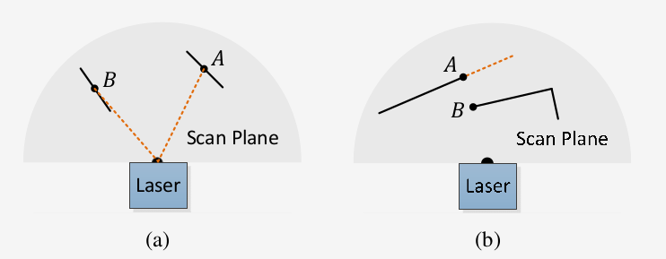
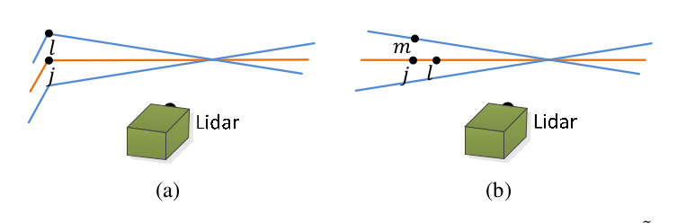
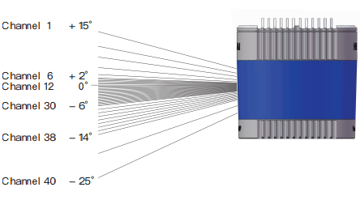

论文思路
2019.11.17-2019.11.18：
按照Ji Zhang和Sanjiv Singh的论文LOAM: Lidar Odometry and Mapping in Real-time的思路对相关算法进行理解，以下即论文大致讲述的内容。参考中文博客LOAM 论文及原理分析。
2019.12.23：
根据毕设要求对论文进行了翻译，现已上传至github上。
2019.11.17-2019.11.18：
0. 摘要
[收缩]
提出了一种利用具有六自由度运动的两轴激光雷达进行测距和绘制地图的实时方法。难点在于测距是在不同时间获得的，运动造成的误差会引起点云配准的错误。目前的方法是通过循环闭合来修正漂移，而这不适用于实时测量绘制。而提出的LOAM方法不需要高精度的测距和惯性测量就可以实现低漂移和低复杂度。（但与A-LOAM的程序相比，相对于的程序保留有使用IMU修正的接口。）该算法的核心是将定位和建图进行分割，通过两种算法优化大量变量。一个是执行高频率的里程计但是地精度的运动估计（定位），另一个算法在一个数量级低的频率执行匹配和注册点云信息（建图和校正里程计）。
1. 简介
[收缩]
一般激光传感器在测量过程中是进行除旋转以外的空间运动的，精确的测绘需要依靠对雷达位姿的相关信息。目前常用的方法是通过独立的位姿信息来注册点云，如GPS、INS。另一种方法是通过车轮编码器或是视觉里程的信息注册点云。但里程计的误差会在积分过程中不断累积，需要花费精力去抑制里程计的漂移。本方法的优势不在叙述，核心在摘要部分已经叙述过，提供的IMU接口不必要但可以用来优先描述运动以解释高频运动。
测程算法和绘制算法两种算法都提取了尖锐边缘和平面表面的特征点，并各自将特征点与边缘线和平面块匹配。在测程算法中通过保证快速计算找出特征点之间的对应关系。在映射算法中，通过检查局部点簇的几何分布，通过相关的特征值和特征向量来确定对应关系。这样处理的结果是能够获得高频的运动估计和低频但精度高的地图匹配。
2. 相关工作
[收缩]
在2D激光雷达中，当激光的转速远大于运动速度时产生的运动畸变较小，可以忽略。如果没有运动畸变可直接采用标准的ICP算法。但实际中如果要用ICP进行匹配就需要运动估计来去除运动畸变。在单轴3D激光雷达中采用类似的技术补偿畸变。当使用双轴激光雷达时尤其如此，因为一个轴通常比另一个轴慢得多。通常可以采用其他传感器获得速度消除畸变，如利用视觉里程计和IMU注册点云，当有多个传感器时可以使用扩展的卡尔曼滤波。
当没有其他传感器辅助时，一种方法是Barfoot等人利用激光点云强度创建图像，并在图像之间匹配视觉上的不同特征来估计车辆的运动，这是基于车辆匀速运动的模型计算的。论文的方法同样使用了匀速模型但性质不同，其方法提取并匹配了笛卡尔空间中的几何特征，不涉及图像的视觉特征，对点云密度要求较低。Bosse和Zlot等人的方法是利用两轴激光雷达获取点云，点云通过匹配局部点簇的几何结构进行注册，此外利用了多台两轴激光雷达匹配underground mine（？）。这种方法结合了IMU和闭环映射，本质上需要批量处理来开发精确图，不适于实时地图的创建。相比之下论文的结果在质量上和Bosse、Zlot的结果相似。
3. 表示及任务描述
[收缩]
任务是使用激光雷达获得的点云数据进行运动估计并构建遍历过环境的地图。假设雷达预先校准，并且假设激光雷达的角速度和线速度是连续平滑的。第二个假设通过使用IMU简化实现。
定义雷达的一次扫描为完成一次覆盖的扫描。用`i`表示扫描次数，`P_i`表示第`i`次扫描的点云。局部坐标系`{L}`：右手坐标系，`Z`向前，`X`向左，`Y`向上，点`i\inP_k`在局部坐标系`{L_k}`表示为`X_{(k,i)}^L`。世界坐标系`{W}`：点`i\inP_k`在世界坐标系`{W_k}`表示为`X_{(k,i)}^W`。
4. 系统概述
[收缩]
硬件上使用一个单线激光雷达加上两个机械轴实现三维环境的探测。激光的分辨率为0.25度，频率为40HZ。固定激光雷达的轴旋转角度为180度，即从-90度到90之间往复摆动。
激光里程计主要分四部分完成。首先是获得激光雷达坐标系下的点云数据`\hat P`，在`{L}`中注册，然后把第k次扫描获得的点云组成一帧数据`P_k`。然后将`P_k`在两个算法中进行处理，也就是上面Liar Odometry节点和Lidar Mapping节点。Liar Odometry节点的作用是获取两帧连续点云数据间的运动，估计出来的运动用于去除Pk中的运动畸变。这个节点执行的频率为10Hz。并将处理后的结果给了Lidar Mapping节点做进一步处理。Lidar Mapping节点利用输出，以1Hz的频率将未失真的点云注册到地图上。最后由Transform integration节点接收前面两个节点输出的Transform信息，并将其进行融合处理，以频率为10Hz的Transform信息即里程计发布。
5. 激光里程计
[收缩]
A. 特征点提取
在一次扫描scan数据中点的分辨率为0.25度，并且这些点分布在一个扫描平面上。而固定激光雷达的轴的转速为180度每秒，且激光的频率为40Hz，因此这个轴上点的分辨率为4.5度。在此基础上，利用共面几何关系，仅利用单个扫描的信息从`P_k`中提取特征点。
从锐变和平面表面提取特征点。令`S`为同一次扫描中点`i`返回的连续点的集合。由于激光扫描仪产生的点是依次的CW或CCW，所以S每边包含一半的点，两个点之间的间隔为0.25。定义一个参数来描述局部表面的平滑度：`c=1/{|s|*||X_{(k,i)}^L||}*||sum_{j\inS,j!=i}(X_{(k,i)}^L-X_{(k,j)}^L)||`。
根据`c`值进行排序，大的为边缘点，小的为平面点。因为在实际运用中只是比较点曲率的大小，因此在代码中只是求一个点周围五个点差的平方坐标该点的曲率。为了防止特征点聚集，将每一次扫描的点云分成四份，从每份中选取两个边缘点和四个平面点。
在选择点时希望避免选取已经选过点周围的点或者是在于激光线接近平行的平面上的点（如下图(a)中的点B），这些点通常认为是不可靠的，因为它们不能被任何时刻都能看到。同时我们也希望避免可能遮挡点（如下图(b)中的点A）。
B. 寻找特征对应
设`t_k`为扫描`k`的起始时间。在完成一次扫描后会获得一个`P_k`，会对应到时间戳`t_{k+1}`，投影后的点云记作`\overline {P_k}`。在下一次扫描中会使用`\overline {P_k}`和`P_{k+1}`做匹配求激光雷达的运动。
利用`P_{k+1}`的数据，通过上一步已经获得了特征点：边界点记为`E_{k+1}`、平面点记为`H_{k+1}`。在每次扫描过程中`E_{k+1}`、`H_{k+1}`通过当前的估计被投影到扫描起始点的坐标下，记为`E_{k+1}^~`、`H_{k+1}^~`。并为每个`E_{k+1}^~`、`H_{k+1}^~`找到`\overline {P_k}`中最近的相邻点。`\overline {P_k}`存储在3D KD-tree中，用于快速索引。
令`i`为`E_{k+1}^~`中的一点。边线通过两个点表示。令`j`为`\overline{P_{k}}`中最接近`i`的点，令`l`为`j`的临近两个连续扫描中`i`的最近邻点。`(j,l)`构成了`i`的对应关系。为了验证`j`和`l`都是边缘点，我们检查它们的平滑度`c`。在这里我们要求`j`和`l`来自不同的扫描，因为一个线在一个扫描中最多有一个边缘点。除非边线在扫描平面上，但若这样则边缘线退化，在扫描平面上呈现为直线，不应首先提取边缘线上特征点。对于平面点对应上一时刻中的平面，依然首先找到上一帧数据最近点，并在该线扫上找到另一点，再在相邻扫描线上找一点，这样就可以保证三个点不在一条线上组成一个平面。
例如下图(a)中橙色线代表j的统一扫描，蓝色线为两个连续扫描。在蓝线上找到点`l`，对应关系表示为`(j,l)`。为了找到图(b)中的平面片对应，分别在橙色线和蓝色线找到另外两个点`l`和`m`，表示为`(j,l,m)`。
利用特征点之间的对应关系，推导出计算特征点到特征点对应距离的表达式。对于点`iinE_{k+1}^~`，如果`(j,l)`为对应边界线，`j,lin\overline{P_k}`，点到线的距离表示为：`dE=|(X_{(k+1,i)}^{~L}-\overlineX_{(k,j)}^{L})\times(X_{(k+1,i)}^{~L}-\overlineX_{(k,l)}^{L})|/|\overlineX_{(k,j)}^{L}-\overlineX_{(k,l)}^{L}|`。（这里叉乘取模求2倍面积，然后除底边长度求距离。具体参考LOAM 论文及原理分析，其中关于面积的说法似乎有误。）对于平面点`iinH_{k+1}^~`，如果`(j,l,m)`为对应平面，`j,l,m in\overline{P_k}`，点到平面的距离表示为：`dH=|(X_{(k+1,i)}^{~L}-\overlineX_{(k,j)}^{L}),((\overlineX_{(k,j)}^{L}-\overlineX_{(k,l)}^{L})\times(\overlineX_{(k,j)}^{L}-\overlineX_{(k,m)}^{L}))|/|(\overlineX_{(k,j)}^{L}-\overlineX_{(k,l)}^{L})\times(\overlineX_{(k,j)}^{L}-\overlineX_{(k,m)}^{L})|`。（分子叉乘取模为体积，分母为底面积，求得高。具体参考LOAM 论文及原理分析，其中关于面积的说法似乎有误。）
C. 运动估计
前面提到过论文假设激光雷达的运动为匀速模型。这允许我们在扫描中对不同时间接收到的点进行线性插值位姿变换。令`T_{k+1}^L=[t_x,t_y,t_z,\theta_x,\theta_y,\theta_z]`为`[t_{k+1},t]`间的雷达位姿变换。对于`iinP_{k+1}`，令`t_i`为其时间戳，`T_{(k+1,i)}^L`为在`[t_{k+1},t_i]`间的位姿变换，满足线性性`T_{(k+1,i)}^L=(t_i-t_{k+1})/(t-t_{k+1})T_{k+1}^L``。
为了解决运动问题，建立几何关系`X_{(k+1,i)}^L=RX_{(k+1,i)}^{~L}+T_{(k+1,i)}^L`，其中`R=T(4:6)=e^{\hat\omega\theta}=I+\hat\omegasin\theta+\hat\omega(1-cos\theta)`为旋度（用罗德里杰斯公式将旋转矩阵R展开，其中`\hat\omega`为R的大小，`\theta`为R对应的单位向量），`T=T(1:3)`为平移量。
定义误差函数`f(T_{k+1}^L)=d`，其中`f`的每一行对应一个特征点，`d`包含对应的距离。计算`f`关于`T_{k+1}^L`的雅可比矩阵，记作`J=(\partialf)/(\partialT_{k+1}^L)`。可通过非线性迭代求解，使d趋于零。`T_{k+1}^L\leftarrowT_{k+1}^L-(J^TJ+\lambdadiag(J^TJ))^{-1}J^Td`。
D. 算法
直接看代码吧。。
6. 建图
[收缩]
建图算法的运行频率比测程算法低，每次扫描只调用一次。扫描k+1结束后激光雷达测程生成一个无畸变的点云`\overline{P_{k+1}}`，并同时生成一个位姿`T_{k+1}^L`包含了`[t_{k+1},t_{k+2}]`间的激光雷达运动。建图算法在世界坐标系中匹配并注册`\overline{P_{k+1}}`。为了解释这个过程，先定义`Q_k`为累积扫描到k次时地图上的点云，`T_k^W`为第k次扫描结束时激光雷达在地图上的位姿。通过测程算法的输出，一次扫描后将`T_k^W`扩展到`T_{k+1}^W`，同时将`\overline{P_{k+1}}`投影到世界坐标系中记为`\overline{Q_{k+1}}`。然后通过对`T_{k+1}^W`的优化匹配`\overline{Q_{k+1}}`和`Q_{k}`。
建图算法特征点的提取方法与前面相同，但使用了十倍的特征点并将点云存储到一个十立方米的图上，记为`Q_k`。与`\overlineQ_{k+1}`相交的点提取并存储到一个3D KD-tree。我们发现`Q_k`中的点在特征点中的特定区域内。记周围的点为`S'`。对于边缘点，只保留其中在边线上的点，对于平面点，只保留其中平面上的点。然后记`M`为`S'`的协方差矩阵，M的特征值和特征向量分别记为V和E。如果`S'`分布在边线上，V包含一个明显大于其他两个的特征值，那个明显大的特征值对应的特征向量表示边缘线的方向。如果`S'`分布在平面上，V包含两个大的特征值以及一个明显小的特征值，小的那个对应的特征值表示平面片的方向。边缘线和平面片的位置是通过`S'`的几何中心确定的。
为了计算距离，选择两个点，一个在边缘线，一个在平面上，可使用与前面相同的计算公式。通过Levenberg-Marquardt方法进行鲁棒拟合再次求解非线性优化问题，并在地图上注册`Q_{k+1}`。为了均匀分布这些点，地图云被一个大小5立方厘米的立体像素网格过滤器缩小。
ROS代码构架
2019.11.18：
包含文件
.launch文件包括hector_loam_velodyne.launch和loam_velodyne.launch。主要作用是运行节点程序scanRegistration、laserOdometry、laserMapping、transformMaintenance和可视化rviz，除rviz外分别对应到/src目录下.cpp文件。各节点间的通讯如下图：

各文件代码
主要参考翻译过的程序。
1. scanRegistration：利用IMU去除激光传感器在运动过程中非匀速（加减速）部分造成的误差（运动畸变）。参考LOAM SLAM代码解析之一：scanRegistration.cpp 点云及IMU数据处理节点。
[收缩]
（注：IMU、velodyne雷达为x轴向前,y轴向左,z轴向上的右手坐标系，scanRegistration会将IMU坐标转换到论文所用坐标系。）
主要函数：
- ShiftToStartIMU：计算局部坐标系下点云中的点相对第一个开始点的由于加减速运动产生的位移畸变。首先要求出世界坐标系下的加减速造成的运动畸变，然后将运动畸变值经过绕y、x、z轴旋转后得到起始点坐标系下的运动畸变。
- VeloToStartIMU：计算局部坐标系下点云中的点相对第一个开始点由于加减速产生的的速度畸变（增量）。从全局坐标系到起始点坐标系。
- TransformToStartIMU：去除点云加减速产生的位移畸变。从全局坐标系到起始点坐标系。
- AccumulateIMUShift：积分速度与位移，获取每一帧IMU数据对应IMU在全局坐标系下的位移和速度。
- laserCloudHandler：接收点云数据，velodyne雷达坐标系安装为x轴向前，y轴向左，z轴向上的右手坐标系。具体内容包括：将点云中的点按照其空间中与Z轴成的角度将其分类到多根激光线束中并记录线束号和获取的相对时间；遍历每个线束 上的点，求该点的曲率，通过曲率将点进行特征点分类；根据IMU获得的数据去除激光传感器加减速造成的畸变。
- imuHandler：接收imu消息，imu坐标系为x轴向前，y轴向右，z轴向上的右手坐标系。另外减去重力加速度的影响，求出xyz方向加速度的实际值。
- main
程序构架：
- 接收/velodyne_points点云数据laserCloudMsg
- 延时systemDelay次，确保有IMU信息
- 记录当前点云时间、转存pcl格式的laserCloudIn
- 移除空点
- 记录点数、开始点旋转角、结束点旋转角（控制在pi~3*pi间）
- 遍历所有点数
- 坐标变换
- 计算仰角angle(velodyne每两个scan之间间隔2度)、根据仰角排列激光线号scanID = int((angle + 92.0/3.0) * 3.0 / 4.0)???、只挑选[-15度，+15度]范围内的点（对应scanID属于[0,15]）
- 计算旋转角ori（根据是否过半进行相应处理）
- 如果有IMU数据，使用IMU数据进行插值计算点云的中点的位置，消除由于非匀速运动造成的运动畸变
- 找到点云时间戳小于IMU时间戳的IMU位置，则该点必处于imuPointerBack和imuPointerFront之间，据此计算时间权重线性插值，计算位姿和速度
- 否则不插值，以最新的IMU数据计算
- 如果当前是第一个点，记住当前位姿和速度
- 否则计算之后每个点相对于第一个点的由于加减速非匀速运动产生的位移速度畸变，并对点云中的每个点位置信息重新补偿矫正：ShiftToStartIMU(pointTime); VeloToStartIMU(); TransformToStartIMU(&point);
- 将每个补偿矫正的点放入对应线号的容器laserCloudScans
- 将laserCloudScans所有的点按照线号从小到大放入一个大小N_SCANS的容器laserCloud
- 遍历5~cloudSize - 6（默认的起点为0），使用每个点的前后五个点计算曲率cloudCurvature，每个scan，曲率只取同一个scan计算出来的，跨scan计算的曲率非法，排除，也即排除每个scan的前后五个点
- 遍历5~cloudSize - 7。去除容易被挡住的点：首先计算有效曲率点与后一个点之间的距离平方和，如果距离平方和大于0.1，然后计算两点的深度，按照两点深度的比例将深度较大的点拉回后计算距离。如果拉回后的距离/最近的深度<0.1，说明夹角比较小，斜面比较陡峭,点深度变化比较剧烈,点处在近似与激光束平行的斜面上，该点及前面五个点（大致都在斜面上）全部置为筛选过。去除离群点：计算与前一点距离平方和、点的深度（？？），与前后点的平方和都大于深度平方和的万分之二，这些点视为离群点，包括陡斜面上的点，强烈凸凹点和空旷区域中的某些点，置为筛选过，弃用
- 将每条线上的点分入相应的类别：边沿点和平面点。遍历所有线束。
- 将每个scan的曲率点分成6等份处理,确保周围都有点被选作特征点。遍历六等分数组
- 每一份内部按曲率从小到大冒泡排序
- 挑选每个分段的曲率很大和比较大且未被过滤的点。前两个代表曲率很大。其余前20个表示曲率比较尖锐。将曲率比较大的点的前后各5个连续距离比较近的点筛选出去，防止特征点聚集，使得特征点在每个方向上尽量分布均匀
- 挑选每个分段的曲率很小比较小且未被过滤的点。最小只选四个，其余的比较小。同样防止特征点聚集
- 将剩余的点（包括之前被排除的点）全部归入平面点中less flat类别中
- 由于less flat点最多，对每个分段less flat的点进行体素栅格滤波
- publich消除非匀速运动畸变后的所有的点/velodyne_cloud_2
- publich消除非匀速运动畸变后的平面点和边沿点/laser_cloud_sharp、 /laser_cloud_less_sharp、 /laser_cloud_flat、 /laser_cloud_less_flat
- publich IMU消息,由于循环到了最后，因此是Cur都是代表最后一个点，即最后一个点的欧拉角，畸变位移及一个点云周期增加的速度/imu_trans
- 接收/imu/data的IMU数据
- 由四元数获得欧拉角
- 减去重力的影响,求出xyz方向的加速度实际值，并进行坐标轴交换
- 循环移位效果，形成环形数组
- 积分速度与位移
发布消息：
- /velodyne_cloud_2：消除非匀速运动畸变后的所有的点
- /laser_cloud_sharp：消除非匀速运动畸变后的边沿点（最多2个）
- /laser_cloud_less_sharp：消除非匀速运动畸变后的弱边沿点（最多20个）
- /laser_cloud_flat：消除非匀速运动畸变后的平面点（最多4个）
- /laser_cloud_less_flat：消除非匀速运动畸变后的弱平面点
2. laserOdometry：对应论文中激光里程计部分。
[收缩]
主要函数：
- TransformToStart：当前点云中的点相对第一个点去除因匀速运动产生的畸变，效果相当于得到在点云扫描开始位置静止扫描得到的点云。
- TransformToEnd：将上一帧点云中的点相对结束位置去除因匀速运动产生的畸变，效果相当于得到在点云扫描结束位置静止扫描得到的点云。
- PluginIMURotation：利用IMU修正旋转量，根据起始欧拉角，当前点云的欧拉角修正。
- AccumulateRotation：相对于第一个点云即原点，积累旋转量。
- laserCloudFullResHandler：接收全部点。
- imuTransHandler：接收imu消息。
- main
主要框架【20200116:接下来以aloam的程序进行分析】：
- 读入上一个节点发送的消息，使用互斥锁
- 如果接收到的数据都不为空
- 获得消息队列起始的时间戳，如果不同则退出
- 复制起始信息，并剔除
- 检查是否初始化
- 如果未初始化，开始初始化
- 否则，已初始化，优化两次
- 查找边缘特征点的对应关系
- 查找平面点的对应关系
- 优化
- 发布里程计估计"/laser_odom_to_init"，laserOdometry数据来源于q_w_curr、t_w_curr
- 发布激光路径"/laser_odom_path"，数据来源于laserOdometry
- 将特征点转换到扫描终点
- 降帧发送"/laser_cloud_corner_last" "/laser_cloud_surf_last" "/velodyne_cloud_3"
发布消息：
- /velodyne_cloud_3：降帧发送，对齐到扫描终点的消除非匀速运动畸变后的所有的点
- /laser_cloud_surf_last：降帧发送，对齐到扫描终点的消除非匀速运动畸变后的弱边沿点
- /laser_cloud_corner_last：降帧发送，对齐到扫描终点的消除非匀速运动畸变后的弱平面点
- /laser_odom_to_init：发布里程计估计
3. laserMapping：对应论文中激光建图部分。
[收缩]
主要函数：
- transformAssociateToMap：基于匀速模型，根据上次微调的结果和odometry这次与上次计算的结果，猜测一个新的世界坐标系的转换矩阵transformTobeMapped。
- transformUpdate：记录odometry发送的转换矩阵与mapping之后的转换矩阵，下一帧点云会使用(有IMU的话会使用IMU进行补偿)。
- pointAssociateToMap：根据调整计算后的转移矩阵，将点注册到全局世界坐标系下。
- pointAssociateTobeMapped：点转移到局部坐标系下。
- laserCloudCornerLastHandler：接收边沿点。
- laserCloudSurfLastHandler：接收平面点。
- laserCloudFullResHandler：接收点云全部点。
- laserOdometryHandler：接收旋转平移信息。
- imuHandler：接收IMU信息，只使用了翻滚角和俯仰角。
- main
主要框架【20200116:接下来以aloam的程序进行分析】：
- 读入上一个节点发送的消息，使用互斥锁
- laserCloudCornerArray、laserCloudSurfArray重置
- std::thread mapping_process{process}多线程进入proce函数，持续运行，需满足接收到的消息全都不为空，否则休眠一段时间
- 时间戳处理、数据清空和导入
- 初始化估计transformAssociateToMap()
- 根据里程计估计的位置。。。。。
- 滤波器下采样弱平面点和弱边沿点
- 构建tree
- "add points time %f ms\n"
- "filter time %f ms \n"
- 每5帧发布一次附近的点云地图laserCloudSurround3
- 每20帧发布一次laserCloudMsg
- 发布laserCloudFullRes3
- 发布优化后位姿laserAfterMappedPose
- 进入ros::spin()持续接收消息
4. transformMaintenance：将里程计和建图的结果整合。
[收缩]
主要函数：
- transformAssociateToMap：odometry的运动估计和mapping矫正量融合之后得到的最终的位姿transformMapped。
- laserOdometryHandler：接收laserOdometry的信息。
- odomAftMappedHandler：接收laserMapping的转换信息。
- main
发布消息：
- /laser_cloud_surround：发布汇总后的cube内特征点
- /laser_cloud_map：发布全部点云
- /velodyne_cloud_registered：新注册到地图中的点云
- /aft_mapped_to_init：
- /aft_mapped_to_init_high_frec：
- /aft_mapped_path：发布mapping后的路径
代码修改及适配
目标硬件为40线的HESAI Pandar40P，仰俯视角度+15°~-25°，最小垂直分辨率0.33°。下载的代码使用Velodyne的激光雷达，包含16、32、64线。
VLP16仰俯视角度在+15°~-15°，垂直角度分辨率2°，水平分辨率0.1°到0.4°，360°水平视野；
HDL-32E仰俯视角度在+10°~-30°，垂直角度分辨率1.33°，360°水平视野；
HDL-64E仰俯视角度范围26.9°，垂直分辨率约为0.4°，角分辨率0.08°，360°水平视野。
对于16线，scanID = int((angle + 15) / 2 + 0.5)，根据算法，令(angle + 15) / 2 = 0或15，得0-15对应-15°~15°；
对于32线scanID = int((angle + 92.0/3.0) * 3.0 / 4.0)，根据算法，0-31对应-92/3~32/3，即-30.67°~10.67°；
对于64线，if (angle >= -8.83) scanID = int((2 - angle) * 3.0 + 0.5); else scanID = N_SCANS / 2 + int((-8.83 - angle) * 2.0 + 0.5)，令(2 - angle) * 3.0 = 0或N_SCANS / 2 + (-8.83 - angle) * 2.0 = 63，得对应2°~-24.33°。
根据官方使用手册，

4° (+11° to +15°) (Channel 2 to 1);
3° (+5° to +11°) (Channel 4 to 2);
2° (+3° to +5°) (Channel 5 to 4);
1° (+2° to +3°) (Channel 6 to 5);
0.33° (-6° to +2°) (Channel 30 to 6);
1° (-14° to -6°) (Channel 38 to 30);
5° (-19° to -14°) (Channel 39 to 38);
6° (-25° to -19°) (Channel 40 to 39)。
站内相关参考文章如下：
- 激光SLAM
- ROS平台简易教程
- A-LOAM安装测试
- LOAM学习
- Livox-LOAM学习